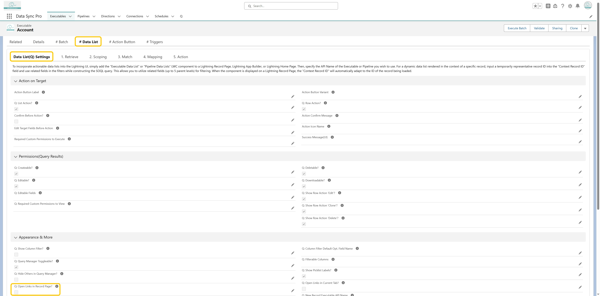
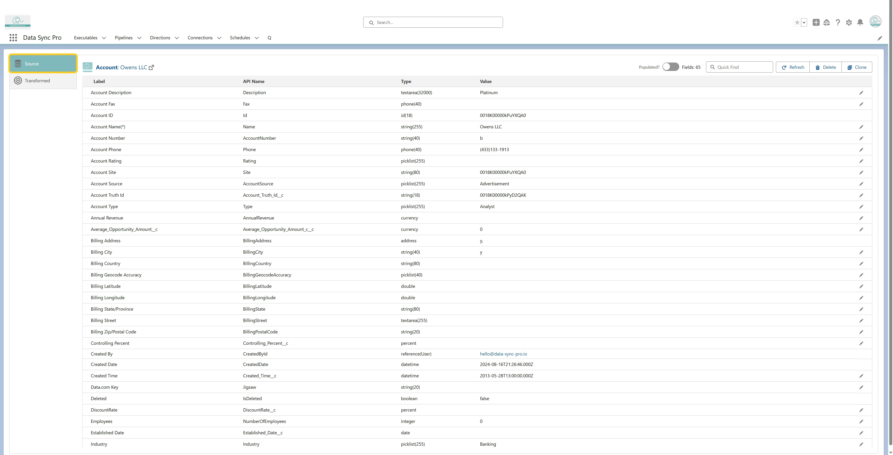
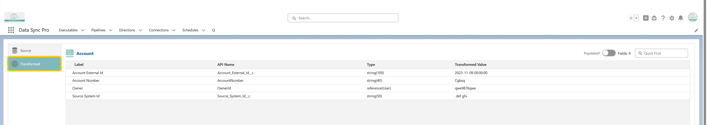

To preview a source record along with its transformed values before
execution, navigate to the Retrieve section. In the previewed source data
query results, click on the Id or Name field of a source record.

This opens a detailed view where you can:
-
View the Source Data: The Source tab displays all field
values from the retrieved record.
-
Check Transformed Values: The Transformed tab shows
the current values (if any) and the transformed values for mapped
target fields.

-
If the record does not meet execution criteria, a message
"No target action will be taken for this source record" will
be displayed. If multiple target matches exist, DSP lists all matched
records as tabs—click any of them to view the corresponding transformations.
Note: To enable this preview, ensure that
"Open Links in Record Page" is unchecked in the Query
Builder settings.
